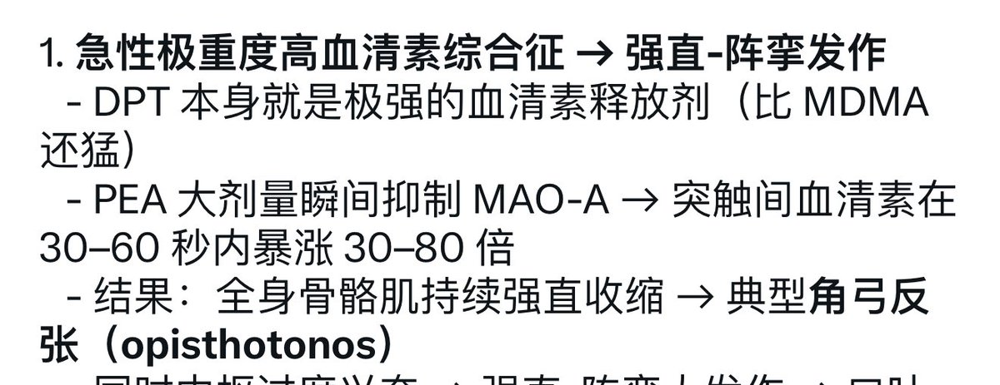

🍊苦橙🍊8️⃣9️⃣6️⃣4️⃣
@Citrus_amara
怎么用了dpt的鼠鼠这么乖地烫手我真不理解。苦鼠你是不是也欠来次trip？（开玩笑的我永远不会用它做实验）

bunny
@pyke2076
@Citrus_amara 大概是因为这个，另外前肢肌肉也因为这个强直收缩，出现了向下比交叉手势了，第二个是磕了300ugDPT的鼠鼠，目前还活着 https://t.co/CRRarBge9K